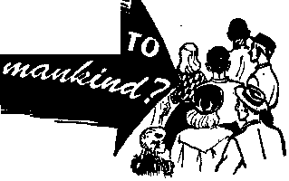
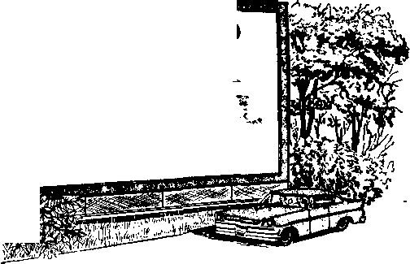
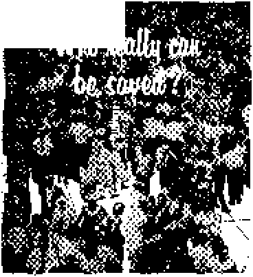

Hie Dead Sea Scrolls and Christian Faith
Here Come the Small Cars
A Visit to Kruger National Park
fltrmany’s Economic Recovery
NOVEMBER 8, 1959
THE MISSION OF THIS JOURNAL
News sources that are able to keep you awake to the vital Issues of our times must be unfettered by censorship and selfish Interests. ‘'Awake!" has no fetters. It recognizes facts, faces facts, is free to publish facts. It Is not bound by political ambitions or obligations; it is unhampered by advertisers whose toes must not be trodden on; it is unprejudiced by traditional creeds. This journal keeps Itself free that it may speak freely to you. But it does not abuse its freedom. It maintains integrity to truth.
‘‘Awake!" uses the regular news channels, but is not dependent on them, its own correspondents are on all continents, in scores of nations. From the four corners of the earth their uncensored, on-the-scenes reports come to you through these columns. This journal’s viewpoint is not narrow, but is international. It is read in many nations, in many languages, by persons of all ages. Through its pages many fields of knowledge pass in review—government, commerce, religion, history, geography, science, social conditions, natural wonders—why, its coverage is as broad as the earth and as high as the heavens.
‘'Awake!” pledges itself to righteous principles, to exposing hidden foes and subtle dangers, to championing freedom for all, to comforting mourners and strengthening those disheartened by the failures of a delinquent world, reflecting sure hope for the establishment of a righteous New World.
Get acquainted with “Awake!" Keep awake by reading “Awake!"
Published Simultaneously in the United States by the WATCHTOWER BIBLE AND TRACT SOCIETY OF NEW YORK, INC. 117 Adams Street Brooklyn 1, N. Y,, U. S. A.
and in England by WATCH TOWER BIBLE AND TRACT SOCIETY
Watch Tower House, The Ridgeway N. H. Knorr, President
Printing this Issue: 2,950,000
“Awiker* It (Kblhhed In ttii following 19 linimgei: Semimonthly—Afrikaans, Dantsfi, Dutch, English, Finnish, French, German, Greek, Italian, Japanese,, Norwegian, Portmuere, Spanish, Swedish, Tagalog.
Monthly—Cin/anX Tndrmcnian, Ukrainian, Zulu
Yearly gutwcrlptioti rates
Offices for semimonthly editions
America, U.S., 11? Adams St, Brooklyn 1, NX $1 Australia, 11 Berertord Rd.. Strat.hfleld, N.S.W, 8/-Canada* 150 Bridgeland Are., Toronto 10, Ont. Si England, Watch Tower House,
The Ridgeway, London N.W. 7 7/*
naw Zealand, 621 New North Rd.. Aukland, SW. I 7/-Sootb Africa, Private Bag, P.O, Elandsfoutein, Tv], 7/-Mont.hly editions cost half the above rates.
London N.W, 7, England Grant Suiter, Secretary
♦d a copy
Rendttantaj for subscriptions should be sent to the office In your errantry. Otherwise wnd ymjr remittance to London. Notice of expiration la sent at least two Issum before subscription expires.
CHANGES OF ADDRESS dtailf reach or thirty diyi before your moving date. Give u» yotrr old and »iw address (Jf possible, your ofd address label), Watch Tower, Watch Tower Horse, The Ridgeway, London N.W. 7, England.
Entered be second-class matter at Brooklyn, N.I, Printed in England
The Bible truilatlon ssed in "Awakeh the Naw World Translation of the Holy Ssrlptaret. When other translations are used the following symbols will appear behind the citations:
AS — American Standard Version AT - An American Translation AV7 - Authorised Version (1611) Zta - J, N. Darby's version
Dy - Catholic Douay version E’JJ - The Emphatic Diaglott JP - Jewish Publication 8oc. Ij8 — Isaac Leeser’s version
Afo - James Moffatt’s version /Co — J, B. Botherham’s version — Revised Standard Version
Yff - Robert Young’s version
CONTENTS
Do You Want to Serve Mankind? 3 The Dead Sea Scrolls and Christian Faith 5 Here Come the Small Cars
A Visit to Kruger National Park
Novel Use of Television in School
Bible-loving Nigerians Welcome
"Your Word Is Truth”
Why Not a Religious Washing of Feet? 27
DO YOU WAHT
profit first in
life,
NOT every
one in the world puts personal advantage and personal although it would seem so from the way people act in the business world. There are persons who realize that a rich, useful and satisfying life cannot be had by living for oneself. It comes from doing things for other people, especially for people who cannot repay in a material way. This was pointed out by Jesus Christ when he said: “When you spread a dinner or evening, meal, do not call your friends, or your brothers or your relatives or rich neighbors. Perhaps some time they might also invite you in return and it would become a repayment to you. But when you spread a feast, invite poor people, crippled, lame, blind; and you will be happy, because they have nothing with which to repay you.” —Luke 14:12-14.
Some persons have gone to great personal sacrifice to fulfill their desire to be of service to mankind. Albert Schweitzer, for example, left Europe many years ago to live among natives in French Equatorial Africa as a medical missionary. He felt that he was serving mankind by giving medical help to those natives.
Others believe they can serve mankind by helping to build or to operate hospitals in their respective communities. Still others engage in welfare activities. An English clergyman, who established an organization for helping people, states that his associates “spread the Gospel without preaching it.” He feels that, this is done by helping people in need.
The desire of these people to help others is commendable, but not everyone who wants to be of service to mankind can be a medical missionary or a builder of hospitals or a founder of a welfare organization. Others try to serve by volunteering time and money to organizations that are dedicated to fight disease or to do welfare work.
Could even these people see more direct results from their service? Yes, by means of a service that benefits mankind far more than medical treatment, food and clothing. Such things bring only temporary comfort to sick or impoverished people and do not get at the cause for human suffering. The service that brings lasting benefits is spiritual. It transforms thinking so that persons who formerly had love only for themselves now exercise love for others, and persons who ignored right principles now live by them. It is a service that brings comfort and hope to people who sigh and cry because of the abominable things that are done in the present worldly system of things. This service is the preaching of the good, comforting news of God’s kingdom.
No amount of charity will change the wicked system that causes people to be impoverished, hungry, poorly clothed and sick. What will help these people most and in a lasting way is a new system of things, a new world. By means of his kingdom Jehovah God has purposed to establish such a world. The most beneficial service a person can do for mankind is to comfort those who mourn and suffer, by telling them this good news.
The kingdom of God will make the sweeping changes necessary for permanently eliminating oppressive rulers, injustice, greed, poverty and sickness. It will strike at the very root of mankind’s troubles. The fact that this will take place in our generation gives hope to the poor, sick and oppressed. It gives them the spiritual uplift that makes life worth living under the most trying circumstances.
Jesus Christ considered the preaching of the good news of God’s kingdom to be of foremost importance. Although he miraculously healed sick people and provided food for multitudes, he did not make that his principal activity. Preaching the truths of God’s Word and the good news of the Kingdom came first. To a crowd that he had miraculously fed he said: “You are looking for me, not because you saw signs, but because you ate from the loaves and were satisfied. Work, not for the food that perishes, but for the food that remains for life everlasting.” (John 6:26, 27) Such food is spiritual food. It feeds and upbuilds the mind in righteousness and truth; it changes a person’s manner of living so that it is in harmony with God’s will The people who received this instruction in the first century were spiritually healthy and exercised love for one another.
It is no different today. People can be benefited in the same manner despite the fact that they live in a world that is spiritually sick. The magazine Saturday Review stated: “So long as the world is ruled by self-firsters it will grow increasingly sick. ... So education must include not only the will to serve, but the knowledge of what is needed.” The people of this spiritually sick world need spiritual food. That is their greatest need.
Proclaiming the good news of God’s kingdom, building up faith and teaching people to live by Scriptural principles is of far greater service to distressed mankind than concentrating on charity drives or on other means for giving material help. It is a work of service to others that persons in all walks of life can engage in. According to Scriptural command the primary work for Christians today is preaching the good news of God’s kingdom and the enlightening truths of God’s Word. This was foretold by Jesus Christ when he said that the good news of the Kingdom would be “preached in all the inhabited earth for the purpose of a witness to all the nations, and then the accomplished end will come.” The apostle Paul also stressed it when he said: “For with the heart one exercises faith for righteousness, but with the mouth one makes public declaration for salvation.”—Matt. 24:14; Rom. 10:10.
The English clergyman who claims that acts of charity can "spread the Gospel without preaching it” is wrong. Kindness and good deeds may confirm what is preached, but they do not substitute for spiritual instruction. They do not fulfill the Scriptural command to preach. By preaching the good things of God’s Word as Christ did you can serve God and, at the same time,, be of the best service to mankind. It is a lifesaving work. It is the work that Jehovah’s witnesses are doing in all the inhabited earth.
fife JWd Sm '
AND CHRISTIAN FAITH
SEVERAL views of the Dead Sea (or Qumran) scrolls are common today, for the four words “the Dead Sea scrolls” stir vastly conflicting sentiments. While many people still do not know what those scrolls are, those who do cannot agree on what they mean.
Reference to the scrolls reminds people who believe the Bible of a major proof of its accuracy, and of a strong attack on the critics who have contended that the Bible has changed down through the centuries. But among the critics of the Bible, those who do not believe that what it says is true, reference to these scrolls recalls their most recent attack on Christianity—an attack that, through the medium of several low-priced paper-bound books, has had a very wide circulation. How can the same scrolls possibly stir such conflicting sentiments on the part of two evidently intelligent and well-informed groups of people? The answer lies in the contents of the scrolls, and in the kind of deductions that have been made from them.
The amazing story of the scrolls started in 1947 with a very simple act. A Bedouin lad was combing the rocky cliffs near the northwest coast of the Dead Sea, looking for a lost goat. Whether or not he found the goat is not a part of the story, but what he did find has raised a controversy that more than ten years of time has not settled. He found a cave filled with ancient clay jars. But if he hoped for treasure, apparently there was none. All that he found in the jars were some ancient leather scrolls, wrapped in linen. But, then, perhaps these scrolls had some value.
The dealer in Bethlehem was not greatly concerned about the scrolls, but eventually (for a handful of coins, it is said) four of them came into the possession of the Orthodox Archbishop of Jerusalem. Experts first said they were worthless, but Dr. William F. Albright of Johns Hopkins University was astounded by them. He immediately dated the Isaiah scroll, twenty-three feet long and bearing the complete text of the Bible book of Isaiah, at 100 B.C. It was, he said truthfully, “an absolutely incredible find.” Every test of modem science, including carbon-14 dating, has verified his statement. The value of such a scroll is fantastic!
For years scoffers had delighted in throwing up to anyone who accepted the entire Bible as being true the great lapse of time between the writing of the Hebrew Scriptures (often called “Old Testament”) and the oldest copies of it available today. The oldest reliably dated copy of an original-language Hebrew Bible manuscript dated from about A.D, 900. But, lo and behold, here was a perfectly legible copy of the entire book of Isaiah that had been written before the beginning of the Christian era! Yet, with the exception of certain minor variations in spelling, and so forth, it is the same as the Isaiah of today. Open your Bible to the book of Isaiah, and you will read the same things that are on that ancient scroll.
The critics were wrong. There had been no major changes in an additional thousand years! It is this corroboration that Bible believers think of when they hear the words “the Dead Sea (or Qumran) scrolls.”
If the Isaiah scroll corroborates, as it does, the textual integrity of a considerable portion of the Bible over the last two thousand years, why do the critics still connect reference to “the Dead Sea.scrolls” with a modem attack on Christianity? The answer is that there were, of course, many more scrolls than the large Isaiah scroll. In addition to manuscripts or fragments of every Hebrew Bible book except Esther, other non-Biblical religious works were found. These belonged to an ancient religious sect, and included commentaries, a Manual of Discipline and a book describing an anticipated religious war.
The scholars connected these religious works with a nearby ruin, Khirbat (“ruins of”) Qumran. They assumed that this was the remains of a monastery that had been occupied by the Essenes (a Jewish religious sect that preceded Christianity) from approximately 135 B.C. to A.D. 68, and that the non-Biblical scrolls found in the nearby caves described their religion.
Then someone decided that there was a striking similarity between the Essenes and Christianity. It was said that this group spoke of “eternal life,” had baptismal rites, sacred meals with bread and wine, and that their community had been founded by a “Teacher of Righteousness” who had been persecuted and perhaps put to death. The critics jumped to the conclusion that Christianity copied these beliefs from the Essenes, and thus was merely an outgrowth of Essenism.
Their arguments appealed to people (1) who had not accepted Christianity anyway, (2) who did not want to accept it, or (3) who in all sincerity had been turned against it by churches that taught foolish, illogical, pagan doctrines of men that are exactly opposite to what Christ taught. But there were other people whose experience with the Bible, and whose Scriptural knowledge of real Christian doctrine (in contrast with what is so often taught in the churches) gave them strong, positive reason to doubt these critics’ conclusions.
Imagine their surprise October 22,1958, when in England, Scotland, Ireland and here in Europe, they heard an excellent discussion of this very subject over the British Broadcasting Corporation’s Third Programme! H. F. D. Sparks, Oriel Professor of the Interpretation of Holy Scripture at Oxford University, said of the critics:
“It was obvious that those who were making the most of [the assumed parallels] were actuated rather by anti-Christian bias than a genuine concern for scholarship.” He explained: “It was pointed out at once that the parallels on which the argument rests are not nearly as close, when examined carefully, as a casual list, such as I have just given, might lead anybody to suppose: there are differences as well as agreements, and the differences have to be accounted for.”
The differences are basic, for as Professor Sparks said: “Whereas the Christians expected a single Messiah (the Jesus they knew already) there is much talk in the Qumran literature of two Messiahs—‘the Messiahs of Aaran and Israel.’ The Christians repudiated the strict observance of the Sabbath, the community at Qumran had the most precise regulations about Sabbath observance. And so one might go on. . . . It can hardly be denied that Christian theology and practice as attested by the New Testament was very far from identical with the theology and practice attested by the Qumran documents.”
In any list of the Qumran sect’s practices, you will find equally striking differences. For example, the Christians were baptized only once, not for “purification,” but only in symbol of their dedication. Yet "water purification rites,” traditional religious washings unknown to the Christians, are believed to have been practiced daily, or even several times a day, by the Essenes.
Further, only in the unusual circumstance when thousands of persons unexpectedly stayed in Jerusalem for further instruction after the famous Pentecost of A.D. 33 did Christians sell their possessions and pool their resources to care for others who had not brought enough money to stay. But, exactly contrary to the Christians, the Essenes were communist, and the "surrender of ail personal wealth” was a requirement for membership in their organization.—Acts 4:34, 35.
Jesus commanded his followers: “Go therefore and make disciples of people of all the nations.” But, just the contrary, the sect at Qumran was in “exile from mankind,” hidden in seclusion, deliberately separated from humanity, preaching to no one.—Matt. 28:19.
The Christians established no ranks, status or special consideration. They forbade honorary titles, “acts of favoritism,” “class distinctions” and said all must be humble. But, in The Dead Sea Scrolls, J. M. Allegro says of the Qumran sect’s writings: “We have frequent mention of their ‘ranks,’ and according to their respective status in the society was their order of seating in the deliberative assemblies, of their speaking, and in fact of practically every communal activity. And in everything the priests had precedence.”—Matt. 23:8-12; Jas. 2:1-9.
Also, unlike the Christians who accepted the theocratic instructions received from the apostles, the Qumran sect had a certain democracy in which “all could vote.”
Still further, the Qumran sect practiced astrology, a form of star worship practiced by the pagans but condemned in the Scriptures. (Jer. 10:2; Job 31:26-28) Like the pagans, the astrologers at Qumran described “the influence of the heavenly bodies on the physical and spiritual characteristics of those born in certain sections of the Zodiac.” According to Allegro, they even “doubtless looked for a particular constellation which would tell them of a special birth, the coming of One for whom they and the whole Jewish world waited.” Thus they were apparently of the same school of thought as were the pagan Magi, who practiced astrology in spite of God’s condemnation of it.
As to the Qumran sect’s “sacred meals,” from what is known of them these were, contrary to the critics’ implication, apparently closer to the Jewish passover than to the Christian “communion” or memorial.
That is not all. Jesus said: “If my kingdom were part of this world, my attendants would have fought that I should not be delivered up to the Jews.” (John 18:36) Yet the Qumran sect was planning to fight. It had definite military aspirations, in direct contradiction of Christianity. The apostle John wrote that it is in heaven that the angels, not men, will destroy Satan’s hosts, but the Qumran sect had detailed instructions for battle, with company standards, platoons and priests on the battlefield.
COMING IN “AWAKE!”
• Is there good reason to believe that this generation will see the destruction of all wickedness and the incoming of a righteous new world? Yeel The next Issue of “Awake!" tells why.
0 Fundamental freedoms of speech, assem. bly and worship for minority groups in New Zealand were made more secure by a recent Supreme Court decision there. Look for the report in the next issue.
• The Belgian Congo has been called Africa's awakening giant. You will understand why when you read the next issue of "Awake!”
In the face of such astounding contradictions, how can the critics possibly say that Christianity is merely an outgrowth of Essenism? Perhaps it is simply that they start out not wanting to believe. For example, one such writer, in effect, calls Matthew a liar, attributes to Paul, not to Jesus, the “invention” of a major part of Christian doctrine, and apparently feels that he, now nineteen hundred years removed from the events, knows more about them than eyewitnesses did. As one reader of such pro-Qumran books said: “If they don’t understand the Qumran writings any better than they understood the Bible passages they cite, I don’t trust a thing they say!”
A. Douglas Tushingham, head of the Division of Art and Archaeology, Royal Ontario Museum, discussed the matter in America’s famous National Geographic Magazine just last December. He said: “Contrary to certain exaggerated interpretations [these parallels] do not suggest that Christianity is only a latter-day 'successful’ Essenism.”
Dr. Sparks said in his October 22 broadcast: “The fairest assessment seems to me to be that both were independent, though admittedly parallel, offshoots of the parent Jewish tree.” He added: “Christianity has never made any claim to be ‘original’ in the sense that is often imagined. Quite the reverse. The earliest Christians saw ‘the things concerning Jesus’ as the fulfillment of Old Testament prophecy: they, not the Jews, were the legitimate heirs to the promises made to the patriarchs; their ‘Church’ not the Jewish Church was ‘the Israel of God.’ ”
Tushingham made the same point in the National Geographic article when he said theologians recognize that “Jesus did not break with the past; he pointedly declared that he had not ‘come to destroy the law ... but to fulfil.’ ”
If the clergy had really taught those prophecies about Jesus to their people, as the first-century
Christians taught them, and as Jehovah’s witnesses do today, then the critics’ presumed comparisons would have disturbed no one. Readers of their books would have recognized the Essenes’ messianic ideas as being merely a misunderstanding of the far more ancient Hebrew prophecies that really did have their fulfillment in Jesus, and thus a great deal of confusion would have been eliminated.
So from the scrolls found in the Qumran caves we reach two conclusions: First, that contrary to the expectation of the critics the book of Isaiah had not changed over a period of two thousand years. Second, that, not the Essenes, but the Hebrew Scriptures themselves were the forerunners of Christianity and the predictors of the true Messiah, Jesus Christ.
Thus, as these ancient scrolls speak out of the past, they merely add another voice to the growing external testimony that the Bible really is true—a fact that those who have had experience with its contents and principles have known all along.
me a feeling that I’m being followed. I can’t see the point of a big car.” Another viewer said: “Bigness of an automobile scares me. I never quite seem in control of a big car. With a small car I zip around the comer. I have a ball when I drive.” A housewife and sec-
LESS than ten years ago almost all American automobile salesmen were of one opinion, namely, “Americans won’t buy the small car.” “Why should they?” those authorities who were supposed to know American tastes would ask. “U. S. motorists could buy a good used big car for about the same price or less than they would have to pay for a foreign small car. And what American is about to do that?”
But at the third International Automobile Show held in New York city’s Coliseum last April, American men and women were seriously engaged in small-car talk. On the showroom floors there they were closely examining the more than six hundred cars from sixty-eight auto-makers in nine countries, and most of these were small cars. Men and women were clustered admiringly around the rich and the racy little models, discussing the advantages of owning a small car. “Big cars are too cumbersome,” a woman said to her husband. “They lack maneuverability and are harder to handle.” A mother of three children confessed: “I never felt at ease in a big car. Now that I have driven a small car, you can’t get me to drive the big one, especially in traffic.” A woman who owns a Volkswagen remarked: “The visibility is much better” in a small car “and parking is a cinch,” A housewife that had spent six years with the British air force stated: “Big cars give retary had a similar comment to make: “I didn’t know what driving was until I got in a small car. I enjoy driving now. It’s fun.”
They were seriously considering a small car as the “second car” for short runs. A housewife spoke up: “When I go downtown I want a little car to drive.” Another asked: “Why does a 98-pound woman have to drive 4,000 pounds of car to a nearby grocery store to pick up a loaf of bread? For the many errands I have to run every day, a small car is much more suitable than a gas-guzzling dinosaur.” And small-car dealers emphasize this point. “Ladies,” they say, “why do you want to drive such big cars? You don’t need a monster to go to the drugstore for a package of hairpins. Think of the gas bills!” Not only women but men, too, had high praise for the small car.
But the experts said Americans would not buy the small car. Suddenly, however, in the United States it has become smart to own a small European car, contrary to all expert opinion and prognostication. Why? An official in the sales division of a German auto company answers: “Many Americans think it’s smart to drive a small foreign car. It has a certain ‘snob appeal.’ ” “It’s one way of ‘keeping up with the Joneses.’ Many American families couldn’t afford to buy a new American model every year. But European models don’t change very often, and the neighbors can’t tell how late the models is that you’re driving. Also, even if the European car is the only one you have, it’s likely to be taken by observers as a ‘second car.' ”
Authorities in the big-car industry claimed Americans would not buy the small European car because of its inferior workmanship and durability. However, German and other auto makers countered with the claim that their little cars will hold their own against the bigger American cars when it comes to a test of sturdiness and reliability. “But you won’t be able to buy parts for your European car,” said the big-car dealers. Alas! parts are plentiful. A prospective small-car buyer writes: “A friend of mine owns a Volkswagen. She states it not only suits her socially, but economically as well. She reasons as follows: It’s small, which makes it easy to handle. It has plenty of room, gives good service, very little cost to repair. Parts are not expensive, therefore, easy to replace. Particularly noticeable is the fact that there are no drafts. (Wish I could say the same for American-made cars.) She says she has no garage space trouble and the car has plenty of luggage space. She attributes good riding to the torsion bar, whatever that is. I’m sure I don’t know. Who cares? If it’s all Jean claims it to be, that’s what counts with me.”
If the small car is inferior in construction and less durable, United States buyers have not noticed or, perhaps, did not consider those reasons enough for not purchasing one. Could it be that big-car manufacturers were wrongly advised? Why did they hesitate to enter into the small-car market?
The big three leading automobile manufacturers, General Motors, Ford Motor Company and Chrysler Corporation, all have had ideas about making small cars for the United States public. As far back as 1946 General Motors had in mind to build a small car called the Cadet. In fact, they built a new plant in Cleveland, Ohio, for that purpose and invested millions of dollars before they finally decided they could not manufacture the car cheap enough. The big question back there was, Would the American public buy the small car? Those who were supposed to know said, No. So the Cadet program was scrapped.
In 1946 and 1947 the Ford Company manufactured a small car called the Pioneer. However, Americans never saw it. Frenchmen finally reaped the benefits of Ford’s engineering.
Chrysler Corporation went through the same motions. It developed a small car, got it into working condition, named it and all, and then gave up the whole idea about trying to sell it to the American public. Europeans would buy the small car, but would Americans? The big three did not want to face the gamble.
A gamble it was, because making automobiles is an expensive proposition. The margin for mistakes is very narrow. Take the Edsel for example. It cost Ford “$100 million for tools and engineering plus $150 million for new plants and facilities” before one Edsel rolled off the assembly line. Harley J. Earl, vice-president of General Motors in charge of styling, stated: “The design, engineering and tooling costs run between 150 and 200 million dollars. Before you sold a car, it could conceivably be up to 300 million.”
That is why the big-car industry of the United States has been slow about moving into the small-car market. They say that each manufacturer would probably have to sell 300,000 or more cars to make a profit. The small-car market now reaps about $750 million annually. To capture this market, each of the big three must be willing to put up at least $300 million. Authorities say “those are not good odds.” So most of the United States car builders dismissed the idea of making small cars.
But as these same men drove their big cars down the nation’s boulevards, they could not help but see small cars popping out all over the place. Could the experts be wrong? Are Americans buying small cars? Or is this just a passing fancy?
In 1955 about 60,000 cars were imported by the United States. In two years that number increased to 207,000, and for 1959 the figure is expected to exceed 500,000. No passing fancy this! The experts still did not believe what they were seeing. Now their prediction is that the small-car market is to level off at this figure, but others are changing their tune. Some now admit that the market range might leap to a 1,500,000 and then on to 3,000,000 in five years. George Wilcken Romney, boss of American Motors and a believer in small cars from away back, predicts that “in five years the compact car will have at least half the auto market. That market may be 7,000,000 cars by 1965.” Such talk must come as a shock to those authorities who said that it could not be done.
The big three giants in the auto industry have now come out with their version of a small car. The new cars, Chevrolet’s Corvair, Chrysler's Valiant and Ford’s Falcon, are “compact” cars rather than small cars. They are ingeniously designed, comfortable and possess the excellent performance characteristics of the larger models. Four-door Corvair sedans run from $1,810 to $1,920. The Falcon has the longest wheel base of the new economy models. The Valiant may be a little more exotic than the others, while Corvair’s six-cylinder air-cooled rear engine is no doubt the biggest surprise.
What will this do to the seventy-six European companies listed with the United States Department of Commerce as selling their automobiles in the United States? Will the European companies be able to weather the competition ?
Actually the European companies were always aware that the American firms would sooner or later enter the small-car market in the United States as soon as the American public was sold on the idea of small cars. Now, it appears, the time has arrived for United States firms to build, and they can do it profitably without too great a gamble.
But the question is, Will there be any market in the United States for European cars? Some say that the Volkswagens, the Renaults, the Hillmans, the Fiats, and so forth, will be a thing of the past. Not so, say small-car authorities. Times have changed. The small European car is here to stay in the United States. One reason is that the big three do not seem to be planning to make a car as small as those four-cylinder jobs imported from Europe. Therefore, it will be a higher-priced car that the United States manufacturers will make. So it is believed that there will still be room for the cheaper European models.
Also, the United States auto market is so big that it is hard to comprehend it. Small-car manufacturers say that the American public will absorb what they make without causing hardly a ripple in the United States market. For example, in the United States there are close to 4,500,000 cars scrapped annually. If you take in cars, trucks and other commercial vehicles, some 5,000,000 machines annually end up in the nation's junk yard. In other words, the United States scraps more cars each year than are on the roads of Great Britain, many more than are on the highways of France, Germany or Canada. This nation scraps five times as many cars as are on the roads of Sweden. In the world it is estimated that there are some 82,500,000 cars, and of this number 56,000,000 are in the United States. That leaves 26,500,000 for the rest of the world. These figures prove that the car market in the United States is big in every sense of the word, that there is room for a great many imported models.
Another thing, the European small car is appraised by its makers as a specialpurpose car, not as a substitute or rival of the American car. The European car comes in handy as a “second" car for shopping and traveling short distances between suburbs and cities. Without question, many European cars are well built. Volkswagen people claim its engine can run steadily at top speed without harm. Aston Martin, a British car, is capable of accelerating from 0 to 100 miles an hour and stopping again in less than thirty seconds. Who is there to doubt that European cars have made good loyal friends in the United States, for good reasons that will not wear off quickly. The engineering, the design, the skills put into European cars cannot easily be duplicated at the price that these cars sell for in the United States.
The American public has bought these cars at such a rate that makers have been unable to keep up with the demand or sensibly anticipate their future dimensions. This grand surge for the small car has not been without reason. The small-car people predict that this is just the beginning. These authorities state that American manufacturers and the American public cannot deny something that is so basically needed and sensible in the United States as the small car, the kind the European companies produce.
The number of two-car families in the United States has grown to 17 percent of all car owners. Now the three-car family is becoming popular; there Eire an estimated 375,000 such families now in the United States. The economy car today meets the needs of at least 50 percent of United States transportation requirements. The short haul, the one-or-two-occupants-to-a-car trip is the order of the day, just as are rising costs of gasoline and maintenance. This does not mean big cars are a thing of the past or that they are on their way out. Far from it. Rather, indications are that the small car is coming into its own. It is finding a place in American life.
Natural Sweat* and the Teeth
Writing in the Journal of the Royal Naval Medical Service, Surgeon Captain T. L. Cleave says: “The natives living in the Persian Gulf, who consume great quantities of dates, have excellent teeth. Similar sticky food, if in the form of a cooked product, such as toffee, would tend to cause rapid dental caries, since the greatest cause of dental carles seems undoubtedly to be the production of acid from the bacterial fermentation of starch and sugar. What is the explanation of the difference? It is submitted that the explanation lies in the fact that in the case of the dates the sugar is found in cells that are still actually alive. And as long as the date cells are alive, the antibodies in the living cells will continue to protect them from bacterial attack just as they did on the tree, and just as they do in our own case. ... By the time the cells are dead and therefore vulnerable to fermentation, new meals will have been eaten and moved the cells along away from the teeth.”
9
BY “AWAKEI" CORRESPONDENT JN SOUTH AFRICA
KRUGER
NATIONS PARK
AWAY back in 1898 in a peaceful part of sunny South Africa, a section of countryside was reserved for the preservation of wildlife. This stretch of bushveld extended about two hundred miles along the border of Portuguese East Africa from Komatipoort to the Limpopo River. Its width varied from thirty to sixty miles, with an area of about 8,000 square miles. This sanctuary for wildlife owes its exist* ence to the late President Kruger, an(i today the Kruger National Bank is known
world-wide. ■' \\ kuza,
The park was first opep^cf ^ public ; in 1928 and has much charftj. in tbjit year only three cars entered, whereas in 1957 there were 117,185 visitors. Thp pliipstfe is subtropical—just ideal for
The rainy season is from October to March, so the best/ * time to visit the park is from! ( June to the end of September. • The whole park is open to the public from May 14 to Octo- ? < ber 15. However, on account L. of malaria, as a result of the rains, the park is closed for ■?.. the rest of the year except for the sections around the rest camps at Pretorius Kop and Skukuza, which are located;.. ■ in the southern part of the reserve.
The park is a favorite rendezvous for South Africans, and at holiday times, such as Easter, the July school vacation and Christmas, it is very crowded. Unless one
books well in advance, it is almost impossible to get a hut or cottage there. Even the place allotted for camping is fully occupied. The circular “rondavel” huts are made of concrete with thatched roofs, simply furnished with two beds, washbasins, chairs, electric light, and with easy access to bathrooms and toilets outside. There, is also a communal fireplace nearby at which food may be cooked, water boiled, and so forth, or, for those who prefer it, there is an excellent restaurant where good meals may be obtained at a reasonable rate. As for the cottages at Pretorius Kop and Sku-
limited number have two bed-. rooms with two beds in each, H bathroom with hot and cold i water, electric light, kitchen-j ■ ette and large wire-netted en-Closed stoep. So whichever a you stay in, either a hut or a cottage, you are most comfortable.
We went there at Easter time, a time when the only two camps open, Pretorius
Kop and Skukuza, were completely booked up. At the entrance to Pretorius Kop a number of cars were waiting to enter. It was early > ' morning and the sun was just beginning to peep over the horizon. The air had a soft warm feel about it, and we knew it was going to be a perfect day.
We drove along very slowly—looking, looking and looking—hoping a lion or two would cross our path but, alas, there were none to be seen. We comforted ourselves by saying, well, the day was still young. It was not long before we began to see dozens and dozens of rich rufous-fawncolored impala. Some were just standing on the roadside chewing and looking at us, while others were slowly walking along the road. Suddenly, ong after the other, about a dozen of them would start leaping gracefully across the road as though they were playing and having an “invisible” hurdle race. They had got used to cars. They knew they would not hurt them, so they were not afraid.
That first morning we saw mostly different kinds of buck—impala, steenbok, reedbok and springbok—a few wildebeest and zebra. But no lions crossed our path. We just went on hoping—looking and looking. We circled round and round in the numerous bypaths around the camp and now we were anxious to spot elephants and other big game, but they too evaded us. The impala by this time were now moving around in hundreds, big ones, baby ones and some a little bigger. Here and there we saw a few waterbuck with the white circle around the tail—a characteristic of their own—moving around in the bush. Slinking about in the bush, too, were jackals, but they kept their distance as they trotted along.
Soon monkeys began to appear. It was like a traveling circus coming along to entertain us, just dozens of them walking and jumping—the old baboon, mamma monkey with baby riding on her back with big pink ears sticking out, and more baby monkeys jumping from branch to branch in the trees squealing with delight. The procession stopped for awhile and then moved on. One old baboon was very curious. It seemed as though he could not make out if we were animals or not. He had seen many of these strange things pass along from time to time so he just sat on the roadside close to the car and looked at us with a quaint but cunning expression on his face. He was certainly well scarred from past battles he must have had.
Next we came to the “hippo” pool, a scene of beauty and tranquillity. It was surrounded by trees and bush. Partly out of the water, with their heads on top of each other, a couple of hippos looked very contented. They seemed to make slow, effortless movements in the water that were hardly noticeable. Very slowly they would appear out of the water—eyes, nose, head, a bit of the body—give a few puffs, just stay that way for a while, and then suddenly they were not there.
Still no lions or elephants! But we went on looking and looking. Now appeared the giraffe standing in the bush among the trees. All one could see at first were long legs and, looking over the trees, a head with two knobs protruding. How easy for them to pick the green leaves from the topmost branches, for they seldom stoop to eat grass! They were not much interested in us, but one or two obliged us by crossing the road in front of the car so that we could have a good look at them walking along. They always walk by moving both legs on the same side simultaneously, like a camel.
The next day we decided to go to Sku-kuza and hunt lions once more, so off we started at dawn, still looking and looking. We drove along the lower Sable road and on the way met a spotted hyena slinking along. They are fond of wandering along roads. We pulled up and he stopped beside the window, stood up and peeped in. Being a bit of a scavenger, he was probably wanting something to eat. From us, he shuffled over to another car in front of us and did the same thing to them.
As we came along the banks of the Sable River another scene of natural beauty made us stop. Lying on the rocks basking in the sunshine and with only his tail in the water was a lazy old crocodile. The reflection of the tall reeds, bush and rocks in the clear blue water gave the water a mirrorlike appearance. Even the “croc” looked harmless as it lay perfectly still.
Now we were in lion and elephant country and warning notices told us to “Beware of Elephants.” Excitement grew. We would surely see something big along this road. We passed many cars and inquired if their occupants had seen lions. We were beginning to hear stories that lions, leopards and cheetah were about. Someone had seen three lions a mile up the road, so on we drove. Some cars had stopped. What was attracting their attention? As we came up alongside our anticipation was keen. Yes, there they were—three lionesses prowling around on some rocks near the river. Someone said there was a lion nearby too, so we kept absolutely still and watched. About ten yards in front of us a huge head with a thick mane suddenly appeared out of the bush and looked at us with curiosity. Slowly the lion crossed the road with dignified tread, as befits the king of animals, and went on his way into the bush on the other side of the road to look for his lady friends. It was an exciting moment, a thrill of a lifetime! Cameras clicked again and we hoped it would be a good picture.
On our way back to camp we passed more small monkeys sitting in the middle of the road, and on tba roadside. They came up to the car chattering away, stood up, sat down again and then had a good old scratch. They were all sizes, but the baby ones just stole our hearts away. We passed more buck and other small animals, but the .sun was beginning to sink, the animals were wending their way into the bush and we realized it was time for us too to make our way back to the rest camp.
The sunset was perfect—just as an African sunset can be. As we sat on the steep of our hut enjoying our “sundowners” and looking over toward the Mozambique mountains we thought how good it was to be alive and to know that Jehovah had created this beautiful earth for our happiness. It has great beauty now, but how much more wonderful it will be when it is restored to its original loveliness. In God’s new world man and beast will be at peace with one another. Then it will not be necessary to stay in a car with such beautiful animals moving about a tew paces away, but man will be able to enjoy to the full the handiwork of Jehovah God.
C, In many large department stores television cameras are set up to detect and deter shoplifting. In one town in New York state there is such a camera set up in the local school's study room by means of which the principal can watch the pupils. The result? “Now there is no day-dreaming. The students pay attention to their studies as they never did before. And it is a great boon to the teachers who no longer have to spend full time tn the study hall—an assignment they always considered unrewarding."
(Germanys (Economic Recovery
23? ‘ySn>a1|e!” correspondent in West Setman?
WHAT a change has taken place in Germany since 1947! It has been called an economic “miracle,” for out of the depths of “unconditional surrender,” Germany has climbed back to a prosperous place alongside the free nations of the West, James B. Conant, former High Commissioner to Germany and later American Ambassador, commenting on this in his book Germany anti Freedom, said: “The contrast between 1947 and 1958 ... is so amazing as to be almost unbelievable; it is almost unbelievable to many Germans.”
The bombing raids of World War n not only left millions without proper shelter, but reduced Germany’s industrial capacity to some 10 percent of normal. The transportation system was hopelessly snarled. A report published in 1947 by Lewis H. Brown, who had been sent to Germany on a fact-finding tour, showed that coal production was less than half of normal, factory output was more than 60 percent below the prewar level, and farm produce was down by 30 percent. Steel production, vitally necessary in getting factories running again, was greatly hindered by the coal shortage. The few factories lucky enough to have escaped the ravages of bombing raids were being systematically stripped of useful machinery by the Allies in an attempt to make Germany forever incapable of again waging war. Skilled workers were lacking. Some four or five million soldiers were still confined in prison camps, while millions of others had lost their lives and would never return. Many men holding
key positions were removed as a result of the “denazification” drive. All of these things together created a tremendous manpower and know-how shortage.
Hitler’s house of cards had collapsed, leaving behind a people full of apathy and general indifference. Money was no encouragement to work, for it was practically worthless. You could get what you wanted on the black market, but prices were about a hundred times higher than the fixed legal prices. A pound of butter, for example, cost 300 reichsmarks, equal to many a worker’s monthly wage. Clothing and household furnishings were the things of real value, and people began to sell these, and anything else they could get along without, in order to buy necessities. American cigarettes became an almost universally accepted currency. Both physically and spiritually, it was a sick people grappling ineffectively with a sick economy.
Then came the turning point. In 1948, after Russia, one of the four occupying powers, had refused to co-operate, the Western Allied military governments went ahead and created a stable currency for their three zones of occupation. This marked the birth of the new “Deutsche-Mark” and forebode death for the old “cigarette economy” and the black market. Although weak and wobbly at first, the D-mark has grown in stability until it is now recognized as one of the most stable currencies in the world. The currency reform cut sharply the amount of money in circulation, but at least it now had more than just a hypothetical value. Price and rationing controls were removed except on such items as food, fuel, essential clothing, steel, rent, plus a few other scarce items. Immediately things came out of hiding, hoarded raw materials were suddenly rushed forward for processing. There was a resultant buying spree with an accompanying threat of inflation. But it soon leveled off and the increased total income, although ill distributed, nevertheless gave the people the incentive they needed. Germany was struggling valiantly to get back on its economic feet.
But there were helping hands. Hundreds of millions of dollars, designed to make Europe self-supporting again, were spent under the European Recovery Program. Germany received a goodly share of this financial assistance. Pluckily, the building trade tackled the almost superhuman task of reconstructing bombed-out Germany, The total construction outlay rose from between 7 and 8 billion D-marks in 1949 to about 25 billion in less than ten years. Every seventh industrial worker is still engaged, either directly or indirectly, in construction. Since 1950, when a systematic construction program was set in operation, several million new homes have been built. Thus the building trade has proved to be the main support for the business boom now being enjoyed.
Other factors, however, have also been involved. The growing tensions of the cold war and the sudden outbreak of the Korean war frightened the West into realizing that Communist aggression was an ever-present danger. World politicians began to agree on the need for a strong Germany to help offset this potential threat. The Allies soon abandoned their original plans of turning defeated Germany into a “potato field.” As early as 1947, in fact, they were discussing the necessity of rebuilding German industry, Action on breaking up the cartels and dismanthrig industrial plants was curtailed. Already stripped of much of their machinery, however, it was necessary for these plants to obtain new equipment. The modem, more efficient machines naturally increased their productive potential. The victors, meanwhile, in the irony of war, were left with the older and less efficient machines, which they had dismantled for use in their own countries. The patient was on the mend, being nursed back to health by its former enemies.
Also contributing heavily to recovery was the German people’s readiness to cooperate. After the currency reform had once given them the needed incentive, they lived up to their reputation of being hard and diligent workers. Many women .took jobs; in fact, the total labor force in Germany is still composed one third of women. Labor refrained from demanding undue pay raises and shorter working hours. Profits were poured back into machines and buildings. It was a “social free market” or, as the Germans called it, a “Soziale Marktwirtschaft,” a “free enterprise tempered by social conscience.”
Proposer of this “Soziale Marktwirtschaft” was Professor Dr. Ludwig Erhard. Early in 1949, Erhard, together with the Christian Democratic Union’s Party Boss Konrad Adenauer, drew up their plan of action. After Adenauer became Chancellor, Erhard was appointed Economics Minister. His policy has been one based on private enterprise, competition, sound money, and the minimum of governmental interference with business. He has sometimes said; “I am more of an American than the Americans; I really believe in the economic policies the Americans talk so much about.” Immediately after his appointment, he arranged for laws to be passed favoring the reinvestment of profits into plant construction. His tax program was conducive to reconstruction. Individual initiative was encouraged. His insistence that government controls on goods and prices be lifted likewise proved to be a wise move. Needless to say, his success has made him tremendously popular in Germany.
Chiefly affected by the economic “miracle” have been the Germans themselves, as shown in the rise of the annual total revenue collected by the federal, state and municipal governments from 21.6 billion D-marks in 1950 to 48.5 billion D-marks seven years later. Average wages have more than doubled since 1948. Economic recovery statistics showed a decrease in only two items over the past ten years: the number of unemployed and the annual individual consumption of potatoes. Thus even the “decreases” point up the “increases” in jobs and in the achievement of a higher living standard, a living standard which continues to rise. A recent survey revealed that it had risen by more than 70 percent from 1950 up to 1958. Minister Erhard declared: “The German nation has achieved in 1958 the highest standard of living in its history.” About 3,200,000 Germans own automobiles. Every third family owns its own home and some 10 to 15 percent have television sets. These and other figures offer mute testimony to the tremendous recovery made at home.
But German industry is expanding into other parts of the world. Industrialist Alfred Krupp’s firm has signed a contract to build a $12-million chemical plant in Russia, The Middle East is a happy hunting ground for German salesmen; exports to Greece, Turkey and the Middle East have climbed from less than $10 million a year to $500 million. West Germany outsells any other nation in Iran, Syria and Greece and is second in sales in Egypt and Israel. West Germany's Henschel Works recently outbid both Russia and the United States in landing an order for 108 diesel-electric locomotives from the Egyptian State Railways. A $14-million contract has been issued to West Germany to engineer a huge hydroelectric power project in southeast Asia. And last year a branch of the Bayer Works (known chiefly for its famous Bayer aspirins) was opened in Brazil.
Even the United States has felt the effects. The present small-car trend, with the American auto industry’s once almighty policy- and style-makers trying to win back some of their lost revenue by bringing out small European-type cars, can no doubt be traced back, in large measure, to the success and soundness of the rejuvenated German auto industry. Its Volkswagen, Opel and Mercedes-Benz cars are particularly popular in the United States. Diesel taxicabs made by Mercedes-Benz have shown up in Washington, San Francisco and other American cities and are praised for their economy and durability. The favorite German car, however, is without doubt the Volkswagen.
Early in the 1930's Hitler proposed building a car to be called “people’s car” and which could be marketed for one thousand reichsmarks, at that time equivalent to about $250. Enthusiasm ran high. But the war intervened and halted Volkswagen production before it had even gotten started. In the winter of 1943/44 the plant was severely bombed. From all appearances it was the end of the “Volkswagen story." But after the war English occupation troops needed cars. Why not take over the Wolfsburg plant? With a certain feeling of satisfaction, they would build “Hitler’s car.” Oddly enough, then, this was one of the few plants in Germany not dismantled by the occupying powers. In 1947 production had already hit the 9,000 mark, whereas Opel with twenty and Mercedes-Benz with 1,300 units were only getting started. From this beginning Volkswagen has gone on to register greater achievements—truly a success story mirroring the economic recovery of Germany.
By next year the government hopes to be able to sell the Volkswagen company to small1 stockholders. Several of the three hundred nationalized companies that the government inherited at the close of World War II have already been sold to stockholders, with good success. This is Erhard’s further attempt to cut down on big business and to put an end to the class struggle between capital and labor.
Without doubt the better standard of living in Germany has made life more enjoyable and more satisfying. But not all the results have been good. The thousands of new cars jamming the highways have made Germany the most crowded nation on the continent as regards number of cars for each available mile of roadway. This presents new parking problems for narrow congested streets in ancient German cities. Worst of all, it brings an ever-increasing and truly alarming death toll on the highways.
Thousands of working mothers have neglected homes and families, thereby causing family relations to suffer. Higher divorce rates and increased juvenile delinquency are the natural results.
Perhaps most dangerous and damaging of all is the materialistic outlook this modern-day ‘ 'miracle’ ’ has engendered. Everything is considered solely from a materialistic standpoint. Spiritual interests have been relegated to the background. The economic “miracle" has therefore failed in a most vital field.
The world is actually in need of God’s kingdom. Only God can perform the miracle of establishing a government that will transform all this earth into an everlasting paradise home for righteous man. “Do not put your trust in nobles, nor in the son of earthling man," is the advice given in Psalm 146:3. Man-made “miracles" offer no lasting solution to world problems. Make God’s kingdom your hope for the future. You will never regret having done so.
Study afj "Mattei"
<1 From Washington this report was sent out: "The federal space agency is considering a proposal to look in space for some answers to the scientific riddle of ‘anti-matter,’ it was learned today....
"Anti-particles are the building blocks of anti-matter, which is opposite In electric charge and other vital characteristics from the kind of matter of which the earth is made.
"Anti-particles and ordinary particles co-exist peacefully. They annihilate each other with tremendous releases of energy dwarfing nuclear reactions. . . .
"Scientists so far have discovered at least four anti-particles and assume that several more exist in nature.”—Florida Times-Union, August 14, 1959.
IIGERIA is a country in West Africa about [ the size of Texas and Oklahoma together or a little larger than France and Italy combined. Its 33 million people speak some four hundred languages and dialects and are divided into even more tribal groups. At present its people are
tracted by the love the Witnesses show. Thus one Apostolic prophetess kept accusing the Witnesses of being false prophets and demon-possessed. However, as she daily noted their friendliness, even to her, and their zeal, she got to wondering: “If these peo
looking forward to taking on full independence from Great Britain by October, 1960.
Jehovah's witnesses are active in Nigeria, even as they are in so many other lands throughout the world. They began their well-known house-to-house preaching there back in 1927, and today they have upward of 27,CW active ministers organized into 450 congregations.
C To a Christian missionary coming from Europe or America to Nigeria for the first time the most striking impression received is that of the readiness of the people to talk about the Bible and God’s purposes. Religion is such a living part of the daily life of the Nigerians that no one ever says, "I'm too busy,” or 'Tm not interested," when approached by a Witness. It is not uncommon to see a knot of people In front of a house or on the street discussing the trinity or whether there is life after death or not. In fact, discussions of Christianity and Islam are regular features of the daily newspapers, It is no wonder therefore that often Nigerians who get to England are shocked at the apathy toward religion there. Upon their return they often ask; "How is it that you come to teach us about Christianity when in your own country the churches are practically empty?”
Another fine aspect of the personality of the Nigerians is their warm hospitality. Jehovah’s witnesses going to distant unknown villages invariably find themselves warmly received and supplied with food and accommodations for the night. In return for such hospitality the Nigerians receive spiritual blessings, even as was true in Bible times. Proof of this is seen in the remark of one hospitable Nigerian woman: "I know now that this is the true religion. I do not have words enough to express my gratitude to you. Here are my children. Please teach them so that they can preach to others as you are doing.”
< On the other hand, the Nigerians are atple are false prophets, why are they so happy, so hard-working and so friendly?” She investigated and soon accepted the Bible truth. In spite of strong opposition from her own family and her former religious associates she continues as a zealous Witness.
C, A serious obstacle the Witnesses meet in their work is the widespread illiteracy, which in some provinces runs as high as 90 percent. The government is well aware of this situation and so is stressing both juvenile and adult reading classes. The good news of God’s kingdom furnishes a strong incentive to learn. Many of the Witnesses have learned to read at seventy and even eighty years of age.
C In spite of the high percent of illiteracy, the Witnesses conduct as many as 31,000 home Bible studies weekly. To hold the interest of illiterate students special techniques are required. One of these is to pose a problem on the focal point of the lessons and to gradually reveal the solution as the study progresses.
<L It would be a mistake to imagine that to be illiterate signifies a lack of intelligence. Often it merely means a lack of opportunity to get a formal education. Many illiterate persons are mentally alert, leaders in their rill ages, capable of grasping great issues and appreciating logical argument. It is simply a matter of getting the ideas across by pictures and verbal explanations rather than by the written or printed word. Frequently the illiterates prove capable of feats of memory that astonish an educated person. Thus a Witness may find an illiterate who is able to explain clearly the whole argument of the previous week’s Bible study and quote the Scripture texts used.
<L The Christian missionaries serving the Nigerians say that there is no work so joyous and rewarding as theirs of carrying the good news of God's kingdom to appreciative persons with hearing ears, the Bible-loving Nigerians who welcome the witnesses of Jehovah.
By “Awake*” correspondent in Belgium
A SMELLY liquid drawn from the bowels of the earth is the very lifeblood of our modern civilization. Nearly everything we use in present-day living, even our food, is dependent upon it. It is the source of power for farm tractors that plow the fields, for the machinery that harvests the crops, for the trucks as well as many of the trains that transport farm products and other goods to cities, towns and villages. Aside from the sun, it is the world’s most important source of energy. For our mechanized world this smelly liquid is “black gold." Because of the great demand for it, oil that flows from a well to this industrial civilization is riches from a pipe. The person who owns an oil well is considered to be a man of wealth.
Oil is so much a part of modern living that few people think much about it until the supply of its products is reduced or cut off. Then they become acutely aware of the vital role petroleum plays in our way of life. The great dependence of modern nations upon it is clearly pointed out by The Encyclopedia Americana. It states: “It may be stated that without petroleum world wars, as we know them, would be impossible. Recovery and reconstruction after such a war would also present insuperable problems without petroleum-powered equipment. Petroleum also is instrumental in production and delivery of fissionable and fusionable materials.”
Few people realize that petroleum supplies us with more than motor fuel, heating oil, kerosene and lubricants. It also provides us with cosmetics, ink, tires, soap, medicines, gum, paints, waxes, asphalts and some three hundred other products that are made entirely or partially from petroleum. It is difficult for the average person to conceive how so many things can come from such dirty-looking, smelly liquid.
One of the theories as to its source is that it was formed ages ago from marine vegetable and animal matter. The exact process is unknown. It is thought that when this matter was entombed in mud, sand or shell banks it gradually underwent a change by chemical, physical and bacteriological action that resulted in oil.
Underground pressure from the rocks and entrapped sea water tends to force the oil to the surface of the ground. When this is prevented by cap rock or some other natural barrier, it is kept in the ground in what are called “oil traps.” These are the oil reservoirs that man is now tapping.
A little less than a hundred years ago the search for oil was rather simple. The prospector would go where he thought oil should be found, throw his hat in the air and begin digging where it landed. Sometimes he struck oil, but more often than not these haphazardly drilled wells were unproductive. They were dry wells,
The methods used today are much more scientific. Before the prospector thinks about drilling he makes a careful examination of the region where he suspects there is oil. An airplane is frequently used to help in this by mapping the terrain photographically. Surface crews use these maps to make seismographic checks. This is done by setting off a charge of dynamite just under the surface of the ground. The shock waves of this miniature earthquake reflect from the hardest layers of underground rock. Sensitive seismographs placed around the explosion center record the reflected shock waves, thus giving the geologist information about the underground layers of rock. The seismographic survey either confirms or disproves the conclusions the geologist has drawn from his examination of rock outcroppings, structural indications and surface signs of petroleum such as surface seepages.
Another instrument the geologist uses Is the gravimeter. It is sensitive to changes in the force of gravity. As we know, gravity is the force that pulls things toward the center of the earth. Observations have revealed that this force is not absolutely the same for all the earth’s surface, but that it is slightly stronger where the substratum is composed of heavier rocks. Slight variations in the gravimetric field help the geologist to discover oil traps in the rocks where he may find crude oil as well as to determine whether the traps are near or far from the surface.
These instruments are only helps and not infallible oil finders. There are conditions in the earth’s strata that can cause them to give deceptive readings. The only way the oil prospector can be sure that he has found oil is by drilling. Although his instruments may indicate conditions suitable for oil, it may not be present because of having escaped to other layers of rock or to the surface in centuries past. The uncertainty of oil prospecting, even with modern instruments, explains the high cost of such research work. It is estimated that this research in the United States alone costs $200,000,000 each year. One exploratory well may cost as much as $500,000.
Early oil prospectors, such as Edwin Drake, used the percussion method for tapping an oil reservoir. This system consisted of nothing more than driving a pointed stake into the ground. The deepest Drake could go with this method was about seventy feet. It could not be used for penetrating layers of hard rock and for reaching deep deposits. It was best suited for shallow oil beds.
Today oil wells are generally sunk by means of drills. A steel tower about 136 feet high is put over the drill site for hoisting the drill, and its connecting tubing in and out of the hole. As the drill bites its way into the ground, tubes are added to the drill shaft or guide pipe.
Especially conditioned mud is pumped through the guide pipe and out through the bit. It then works its way up between the shaft and the wall of the hole. The mud serves the purpose of cooling the bit, bringing up the cuttings and plastering the walls of the hole, thus preventing a cave-jn. It also keeps the hole sealed against a blowout by underground gas. When the mud reaches the surface again the cuttings are screened from it, and it is then recirculated.
Sometimes when an unexpected gas pocket is pierced the pressure of the gas is sufficient to blow the mud out of the pipe. This is a blowout, and it is extremely dangerous. The smallest spark can ignite the gas at the surface, creating a blowtorch that is several hundred feet long. Such fires are difficult to put out. Some have lasted for more than three years. One method used for extinguishing a fire of this nature is to explode a charge of nitroglycerin near the pipe. The explosion momentarily displaces the oxygen that is feeding the fire. That moment Is sufficient to snuff out the blaze, but advance precautions must be taken to make sure that nothing around the well will reignite the escaping gas. Not until the well is capped is it safe for workmen to go near it.
A rotating drill is not satisfactory for extremely deep wells when its connecting tubing must also rotate. When a well is three or four miles deep, the energy required to turn a drill with a shaft that long is tremendous. The problem is solved by using a turbine drill. With this type of drill the guide pipe does not turn. The bit is rotated by a small turbine that is fastened to the bottom section of pipe. The turbine’s source of power is the mud that is circulated through the hole. As it passes through the pipe it turns the turbine and thus operates the drill.
In soft formations the drill may last for two hundred feet before it must be changed. In hard formations it may become dulled by only a few feet of drilling. Sometimes the rock is so hard that a steel crown fitted with diamonds must be used. To replace the dull bit the entire length of tubing must be pulled out of the hole. Each section is unfastened and stood in the derrick or drilling tower as it comes up. After the bit has been replaced the procedure is reversed with the sections being added as the drill descends.
When oil is struck the hole is lined with heavy steel pipe. Cement is pumped between this casing and the wall of the hole as a protection for the wall. A smaller pipe is then put into the hole and attached to an assembly of valves, called a “Christmas tree,” that is fastened to the casing. The mud stopper is removed from the well by forcing oil or some other liquid into the hole. With the mud removed, the oil begins to flow up the pipe under its own pressure.
The natural pressure upon oil may equal half the number of feet that the deposit is under the surface. Oil men do their best to preserve this pressure, as it saves the expense of pumping. When there is insufficient pressure or when it drops after the well has been used for awhile, they may pump gas into the deposit to bring up the pressure. Sometimes they have no choice but to use the more expensive method of pumping the oil out.
When oil is found in a rock formation that is so dense that it does not permit the oil to flow into the well, oil men will use a process known as fracturing. Kerosene or water mixed with sand will be pumped into the well under great pressure. This opens small cracks in the rocks. The sand packs into the cracks and keeps them open when the pressure is released. The oil is then able to flow out of the rock and into the well, where it can be pumped out.
Petroleum is often found in remote parts of the world, far from transportation lines. To build a good road to the well and then take the oil out in tank trucks can be very expensive. The same can be said of building a railroad to it. A pipeline is the most practical method. Once it has been laid, the cost of moving the oil becomes relatively small. The initial investment of about $150 a yard for the pipeline may seem high, but it is soon compensated for by the savings the pipeline brings.
There are hundreds of thousands of miles of pipelines throughout the world that are continually carrying “black gold” to an oil-hungry world. The United States alone has over 400,000 miles of it. In some instances a pipeline carries the oil to a port where the petroleum is transferred to ocean-going tankers and then taken to refineries. In other cases the oil goes either to a refinery directly or to a tank farm, where it is stored until needed. A tank in one of these farms may hold as much as 150,000 barrels of oil.
When crude oil reaches the refinery it is subjected to a distilling process by first being heated and then its vapors are drawn off and passed through a cooler. This process separates the oil into raw gasoline, raw kerosene, gas oil, lube distillate and heavy bottoms. Thermal and catalytic cracking is an important step in the refining process. This is done by subjecting the hydrocarbon molecules to very high temperatures. The heat causes them to decompose and to reassemble into different molecules. The result is a higher percentage of more volatile products. The cracking of distilled gasoline greatly improves its quality. It is by means of these and other processes that it is possible to get from petroleum hundreds of useful products.
The natural gas found with oil is not wasted. Some of it is pumped back into the ground to increase oil production. Other large quantities are piped under natural gas pressure to a plant that extracts the natural gasoline from it. The processed gas is then sent to distant cities for use in industry and homes.
Natural gasoline is obtained from wet natural gas and from vapors in crude oil storage tanks. Its principal components are such light hydrocarbons as propane, butane, pentane and hexane. These components are separated by the refinery and are later blended in predetermined amounts with cracked gasoline. This gives the gasoline its antiknock quality and greater volatility. Propane, butane and pentane are also used as bottle gas for domestic and industrial fuels.
One of the problems confronting refineries is seasonal demands. Bottled gas, for example, is sold during the summer months in some countries when the housewives do not use coal for cooking. Production has to be adjusted to meet this demand. The same is true with fuel oils. The sale of them is much heavier in the winter than in the summer. A refinery can often adjust its output of products according to the demand. A surplus of lubricating oil, for example, can be transformed into fuel oil or reprocessed'into gasoline.
Without a doubt petroleum is an extremely useful substance, but at the rate the world is using it there is a question as to how long the supply will last. From the time the first well was drilled at Titusville, Pennsylvania, in 1859 until 1957 the world had consumed more than 95 billion barrels of oil. With the demand for oil products growing, the supply of crude oil is expected to meet the world’s demand for only a few more decades. Since oil is such an important source of energy, this is a very sobering thought. It has caused the oil industry to look for new sources of petroleum, such as oil shale and bitumi-noussand.
The fact that so many useful products can come from petroleum is a testimony to the wisdom of the One who created it. Man should be grateful to Jehovah God for this amazing substance and should use it wisely for the good of mankind.
C.. A Communist intellectual once suggested to Red Chinese leader Mao Tse-tung that “Communism is love.” The Chinese Communist chieftain replied: “No, comrade, Communism is not love; it is a hammer which we use to destroy the enemy.”—Time, December 1, 1958.
By “Awaited correspondent in Japan
AS THERE is much in Japan for the tourist to see, there is also much for him to hear. Mingling with the normal sounds of a modern nation are quaint and distinctly Japanese sounds that add to the charm of this exotic land. If you should have the privilege to visit Japan, be sure to listen as well as look while there.
When you arrive in Tokyo and lie down to rest on a futon, a Japanese bed, listen to the sounds that come drifting to you from the outside. Besides the cacophony of a motorized city you will hear the unusual clop, clop, clop sound of many wooden shoes, or geta, as people walk past your lodgings. The geta is a piece of wood, oblong in shape, that is cut in such a fashion as to have two crosswise supports. A looped-ornamental cord is fastened on each >ide with the center of the loop held down at the front of the geta by means of a thong that passes through a hole there. The thong slips between the big toe and the second toe of the wearer’s foot.
and have a toecap of stiff oiled paper or leather.
As the clopping sound tapers ofiy’qu begin hearing the strange sound of aiflut^-like whistle. This is the \\\!( whistle that announces the neighboring masseur. If your back is aching, a good relaxing rubdown by the masseur may be just what you need for a restful night’s sleep.
In the morning
selling housesounds
you may be awakened . by the strange soupii of • ’ a reedy horn; TfeSs-fc'the * tofuyasan riding through the neighborhood on his bicycle bean curd cakes to early-rising wives. This is one of the strange
that you will soon become familiar with, as the Japanese eat o-tofu with almost
This footwear is very practical. Not only does it allow the wearer’s feet to remain cool, but it permits any member of the family to wear the same geta. Many times you will see a little tot wearing a pair about twice the length of his tiny feet. He holds them on by curling up his toes against the ornamental cord. Since Japan is very rainy, under normal conditions the wooden geta are more practical as footwear than leather shoes, which do not stand up well under frequent soakings. The crosspieces of the geta keep the feet above the wet ground. Geta that are espe-
every meal.
Later in the day, as you are walking about, your attention may be attracted by a clattering sound. It comes from the “paper-picture show man.” He makes the sound by clapping two hollow sticks together. The sound sends young Japanese children scampering home to beg five or six yen from their mothers. If successful, they come running back to buy candy from the man. They then cluster around his bicycle to hear a story that is told by means of pictures. The tale is emphasized by the rumble of a drum or the clash of
cially used for wet weather are about two or three, and sometimes more, inches high
a cymbal.
A loudly clanging bell diverts your at-
tention from the small group of happy children to a little man with a big straw hat who is pulling a two-wheeled wagon. The sound of his bell brings out a crowd of housewives who hurry toward his wagon. He is the city garbage collector.
If you should decide to take an excursion out of Tokyo toward the south, you will want to travel by train, as it is a fast and convenient way to go. When you arrive at the railroad station you will hear the voices of many vendors mingling with the customary sounds of such places. There is one letting people know that he has ice cream to sell, another is offering pop, and still another rice. They meet every train and quickly sell what they have to hungry passengers.
As the train speeds through the countryside you may wonder about the Oriental counterpart of the noonday whistle that is heard in many American towns. If you listen as you pass through a town at noontime you will hear it. Instead of a whistle it is a melodious organ-like sound. In the town near the famous Fujiyama volcano the noontime sound may be that of a well-known Fujiyama song.
After you have looked at the volcano you may want to walk about this quaint little town. While you are doing so, your attention may be caught by a strange metallic sound, click-clickety-click. You turn toward the source of it and see a little two-wheeled cart loaded down with many kinds of beautiful flowers. The sound you heard came from the scissors the vendor was clacking together. He is the community florist, who supplies the Japanese housewives with the flowers they love to have in their homes. It is the custom for each house to have a bowl of flowers at the entryway.
On the way back to the railroad station for the return trip to Tokyo your curiosity is aroused by another strange-looking cart that announces its presence by a steady whistle from a small steam boiler. Upon inquiry you learn that the man with this cart is a pipe cleaner. It is the practice in Japan for some of the older men and women to smoke a long, pencil-thin pipe that cannot be cleaned by conventional pipecleaning devices. The vendor does the difficult job quickly and neatly by forcing a jet of steam through the pipe.
By the time you arrive back in Tokyo it is late in the evening, and you are eager to rest your weary body on your futon. But as you walk the last block toward your lodgings you hear a reedy whistle piping a tune. You pause a moment to investigate this new sound. It comes from a vendor who sells the Japanese equivalent of Chinese noodles. He is a popular man in Japan. This is evident from the many customers he has. The loud slurping noise they make as they eat his noodles makes it clear to others that his product is well liked. It is considered good manners in Japan to let your appreciation of good food be known by slurping sounds when eating.
Finally you reach your lodgings and crawl into your futon. It has been a long and weary day of sight-seeing and listening. As you reflect upon what you saw and heard, you conclude that an important part of a visit to Japan is listening to its unique sounds.
Why Not a Religious Washing of Feet?
ON March 27,1959, the New York Times reported that Pope John XXIII revived the ancient ritual of feet-washing. The account said: "With a gesture of humility, Pope John XXHI performed today the Maundy Thursday [the Thursday before Easter] rite of washing the feet of thirteen young priests.” The last pontiff to perform the rite, the paper said, was Pope Pius IX, who died in 1878. The renewal of this ancient custom may cause some to wonder about the Scriptural propriety of the rite. Is it obligatory upon Christians to wash one another’s feet?
Jesus, the night before his death, both washed and wiped the feet of his apostles and commanded his apostles "to wash the feet of one another.” (John 13:1-15) Upon the basis of this passage and of 1 Timothy 5:10, in which it is shown that one of the points considered in the service record of a widow was whether she "washed the feet of holy ones,” many so-called Christian religions carry on the practice and feel obliged to do so by Jesus’ command. They observe his words literally.
To understand why Jesus washed the feet of his disciples and what lessons are conveyed by the practice, it is necessary for us to study the background and custom of those ancient people.
From the Genesis account we note that the custom of washing the feet of strangers dates back at least to the time of Abraham. Back there it was regarded among we ouues of hospitality, a mark of respect to the guest and a token of humble and affectionate attention on the part of the entertainer to wash his guest’s feet, —Gen. 18:4; 24:32.
The custom originated in the East, where the climate is warm and bathing was far too often neglected. The heat and the dry soil made feet-washing a welcome gesture to the weary traveler. Servants, sons and slaves, it appears, were assigned the menial task of washing the feet of their guests. It was regarded as a duty of a humbling nature. So, in addition to the fact that feet-washing was a token of affectionate regard, it was a sign of humility. In the time of Christ feet-washing was usually done by a servant under the direction of the host. However, among Christians, the service was performed by the host or hostess, because most Christians were too poor to have servants. Nevertheless, feet-washing had much practical value in Jesus’ time.—Luke 7:44; 1 Tim. 5:10.
The most remarkable instance of this custom is found in the thirteenth chapter of the Bible book of John, where it is recorded that Jesus washed the feet of his apostles. After washing their feet, he asked: “Do you know what I have done to you?” (John 13:12) Jesus was not establishing any religious ceremony, but was setting an example, and he wanted to be sure they got the point of it. His act was of a symbolical nature, designed to teach brotherly humility and good will. If Jesus, the Master, had performed for his followers an act at once so lowly yet so needful, how much more were the disciples themselves bound to consider one another and to serve one another.
However, various religions since Jesus’ day have made a religious ceremony out of foot-washing. St. Bernard recommended foot-washing as “a daily sacrament for the remission of sins.” In the Greek church It w»s regarded as a “mystery.” During Luther’s time, foot-washing was considered as “an abominable papal corruption,” when "one stoops to wash the feet of his inferior, but expects still more humility in return.” Martin Luther denounced the practice as performed by the pope as hypocritical and not at- all in the spirit of Jesus’ command. He thought the people would "be far better served if they were given a common bath, where they could wash their entire body.” Still, today, some religious organizations declare themselves most decidedly in favor of foot-washing. The question is, Why did Jesus wash his disciples’ feet? And is foot-washing a Christian requirement?
The night Jesus washed the feet of his disciples some of them entered into a discussion as to their prominence and their rights to the most honorable places nearest to the Master. (Luke 22:24-27) Twice before Jesus had rebuked them on this very line, warning them that unless they cultivated and attained a spirit of meekness like little children they could have no part in the Kingdom. It was this spirit that prevailed on this occasion, that apparently led up to Jesus’ washing of the disciples’ feet as a lesson of humility and willingness to serve one another even in the humblest capacity.
Had Jesus and his disciples been the guests of some host on this occasion, it would have been considered the duty of the host to have sent some servant or slave to wash their feet. As the apostles were not guests, but merely had the use of the room, no servant appeared to wash their feet, and it would have been properly the duty and custom for one of the number to have performed the menial service for the others. However, the spirit of rivalry was warm in their hearts, and no one volunteered to render the service, neither had anyone the right to demand it in a company in which Jesus had made no special rank. They all were brothers. This, however, rightly understood and appreciated, would have left the greater opportunity for some of them to have volunteered this service to the others. What an opportunity they all lost!
Jesus apparently Jet the matter go the full limit, without settling their dispute, without appointing any of their number to the menial service, to see whether anyone of them would avail himself of the opportunity and make himself servant of all. He waited until they proceeded to eat the evening meal, contrary to custom, with unwashed feet. Then it was that he arose from the evening meal and washed their feet.
Apparently the apostles were astonished at Jesus’ procedure, and so felt the condemnation that his course implied. Jesus pointed out that washing feet did not mean that he was not the Master, but it did signify that as Master he was not unwilling to serve the lesser members of Jehovah’s family and to minister to their comfort even in the most menial service, and that they should not have been unwilling, but glad, to have rendered such service one to another. By example he was demonstrating humility and love. By this example he made his disciples see the need of being servants in God’s organization, waiting on one another with the water of truth to cleanse and refresh them. Jesus did not do this in the nature of a ceremony to be performed by his people, annually, weekly, monthly, or at any other time, but the principle of his service constituted the example, and is to be observed among his followers at all times.
Hence Christians today should copy his example by being humble and ready to serve their brothers in practical ways, just as foot-washing in Jesus’ day was practical.
* hatching / worlBW
Khrushchev’s U.S. Visit
<§> Soviet Premier Nikita S, Khrushchev, with a party including Mrs. Khrushchev, two of his daughters, his son and son-in-law, arrived in Washington aboard a Soviet TU-114 turboprop plane on September 15. Greeted first by U.S. President Eisenhower, the Russian leader also received a quiet welcome by an estimated 200,000 persons. Khrushchev’s 13-day visit carried him on to New York city, where, on September 18, he presented a disarmament plan to the U.N. General Assembly. Later, in California, because it was deemed "unsafe,” the premier was unable to visit Disneyland, and that displeased him greatly. In San Francisco he was greeted by cheering crowds. A stop-off in Iowa and another in Pittsburgh gave Khrushchev a look at U.S. farming methods and the steel industry. From September 25 until the Soviet leader’s departure on September 27, Eisenhower and Khrushchev held discussions of world affairs. It was reported that the two government heads had, among other things, agreed that new talks should be held on the Berlin issue. Both had agreed to more exchanges between their two countries and said in a joint statement that "all outstanding international questions should be settled not by the application of force but by peaceful means through negotiation.’’
Khrushchev on Disarmament
Speaking before the United Nations General Assembly on September 18, Soviet Premier Nikita S. Khrushchev called for “general and complete disarmament” of all nations within four years. Under the Russian leader’s plan nuclear weapons would be destroyed, all armies, navies and air forces would be abolished and military bases would be dismantled. Khrushchev proposed that only sufficient forces be kept to maintain internal security. Should the Western powers find this unacceptable, then partial disarmament could be considered, such as proposals set out by the Soviet on May ,10, 1955. Among other things, such would call for the withdrawal of foreign forces and elimination of military bases on foreign soil, the establishment of an atom-free zone in Central Europe and the signing of a nonaggression pact between NATO powers and nations of the Warsaw alliance.
Moon Data
Neither a magnetic field nor a belt of radiation is in evidence around the moon. This was reported by Soviet scientists after analyzing data gatherer! by the instrumented container that struck the moon on September 14. Soma scientists have held that it is the rotation of the earth's liquid core that causes a magnetic field around the globe. The moon, it has been maintained, has no such liquid core and should therefore have no magnetic field. Russian moon data appears to bear this out. On September 21 the Tass news agency reported that the final stage of the Soviet lunar rocket had also struck the moon.
Pictures from Space
The first television photographs of the earth from space have been relayed by Explorer VI. The 142-pound instrumented satellite was launched, by the U.S. on August 7. Though the television pictures are crude, their transmission and reception are notable achievements. Explorer VI has also revealed the existence of a new belt of Intense radiation encircling the earth. This radiation band lies within previously discovered radiation belts, one at 2,500 miles and another at about 10,000 miles from the globe. The new belt underlies the closest band and consists of protons said to have energies oPabout 75,000,000 electron volts.
A Plan for Algeria
<$> According to a declaration made by French PresiderA Charles de Gaulle on September 16, Algerians will be given a chance to determine their own political future within four years after the attainment of peace in that land. By referendum they would have the right to choose between independence, autonomy with ties to France, or integration into the French Republic. On September 2 8 the Algerian rebel regime accepted the principle of De Gaulle's declaration and offered to discuss a cease-fire and self-determination, but conflicts still continued throughout Algeria.
West German President
<$> On September 15 Dr. Heinrich Luebke was sworn in as the second president of West Germany. The inauguration, before a joint session of the Bonn parliament, marked the tenth anniversary of that body. Dr, Luebke, who is 65 years of age, succeeded Dr. Theodor Heuss, who had served for two five-year terms.
Defense Build-up
The regime of the Dominican Republic’s President Trujillo took steps in late September to build up that nation's defenses. There was, for example, mobilization of the regular army and a call was issued for 100,000 members of the reserves. High government aides were also affected—with a 15-percent wage cut. According to Trujillo, the measures were necessary because of “the constant threat of Communist ag-gression.”
Peiping Shake-up
•$> Key officials of the Chinese Communist regime were shifted on September 17. Marshal Lin P i a o replaced Marshal Peng Teh-huai as Minister of Defense. Army Chief of Staff Gen. Huang Ko-cheng was suc-ceeded by Marsha] Lo Jui-ching. It was said that these men headed a long list of officials involved in the shake-up.
Princess Visits U.S.
•$> Princess Beatrix of the Netherlands was greeted by about 200,000 persons upon arrival in New York city on Sep-t e m b e r 11. The 21-year-old heiress presumptive sailed into New York harbor aboard a new Holland-Am erica flag ship, the Rotterdam, just 350 years after Henry Hudson entered the harbor in the Half Moon. The 748-foot-long Rotterdam, a 38,645-ton liner, is capable of carrying 1,456 passengers in its first-class and tourist sections. Significant is its design. Its “smoke stacks” are two towers toward the rear of the ship, a departure from usual design. The Rotterdam is the world's fifth-largest passenger vessel and is the biggest Dutch passenger ship.
Papal Call to Prayer
■$> In an encyclical letter dated September 26 Pope John XXIII asked Roman Catholics throughout the world to recite the rosary and pray in behalf of world rulers during October. The pope himself would pray, he said, that causes of strife might be overcome and that armed conflicts might be averted by God. Prayer was asked for “the men responsible for the fate of great as well as small countries,'1 that they “may strive to get to the bottom of the causes that bring about strife and may overcome them with good will.” The 1,500-word encyclical, to be known as “Grata Recordatio” (The Pleasant Memory), was the pope's third since his elevation to the papacy.
Nuclear-powered Icebreaker
<$> The Lenin, an atom-powered icebreaker, sailed on its maiden voyage from Leningrad into the Baltic Sea on September 15. Driven by three atomic reactors, the 16,000-ton craft is said to be able to cut a 100-foot-wide path through sea ice. It can reportedly maintain a speed of two knots while driving through ice eight feet thick.
Prime Minister Assassinated
<$> S.W.R.D. Bandaranaike, Prime Minister of Ceylon, was assailed in his home by a Buddhist monk on September 25. Four shots from a .45 caliber revolver put the 60-year-oid statesman in critical condition and resulted in his death on September 26. The monk reportedly had a personal grudge against the prime minister. Feelings seemed to be strong against the monks following the assassination, even though about 7,500,000 of the island’s 9,500,000 inhabitants are Buddhists. Former Educa-t i o n Minister Wijayananda Dahanayake, an anticommunist, was sworn in as Ceylon’s new prime minister on September 26.
San Marino Vote
$ September 13 elections in the tiny republic of San Marino in central Italy brought victory to Rightist Democratic parties, With 6,000 votes cast, Communist, and Left-wing groups were defeated by a margin of 1,300. Rightists won 36 of the 60 parliamentary seats and will thus hold power until 1963.
U.A*. General Assembly Opens
The United Nations General Assembly began its 1959 session on September 15. Dr. Victor A. Belaunde, a Peruvian, was elected Assembly president. Dr. Belaunde expressed “unshakable faith” in the Assembly and said, "May God grant that this Assembly go down in history as the Assembly of peace.” Communist Chinese membership In the U.N. was rejected on September 22 by an Assembly vote of 44 to 29, with nine abstentions.
Executions in Iraq
<$> On September 20 Baghdad radio announced the execution of 17 foes of the government of Iraqi Premier Abdul Karim Kassim. Among these were four civilians who were condemned as “criminal traitors.” The others, 13 army officers, were accused of backing the policies of Gamal Abdel Nasser of the United Arab Republic, The executed military men were charged with plotting against Kassim or with involvement in a revolt against the premier’s regime at Mosul last March.
U.S. and Iceland
■$> On September 18 Brig. Gen. Gilbert L. Pritchard was removed as commander of U.S. forces in Iceland. The move was made "in response to a request by the Icelandic Government’’ and it was emphasized that “the personal competence of the officer himself is not in question.” According to a formal complaint by Iceland, on September 5 a U.S, sentry had forced two Icelandic civil air defense officials to lie face down on wet ground.
New Charter for Basutoland
<$> Under provisions of a new constitution granted by Queen Elizabeth II on September 21, Basutoland will have its first universally elected Legislative Council. Seventy-six of the eighty Council seats are expected to be filled by Africans. Basutoland, like Swaziland and Bechuanaland, is a British High Commission Territory within the Union of South Africa. It covers an area of 11,716 square miles and has a population of about 625,000. The charter grant is viewed as a step toward self-government.
Cable Link-up
<$> A new transatlantic cable went into use on September 22. The line is the first to connect North America and the European mainland directly and is under the joint ownership of France, West Germany and the American Telephone and Telegraph Company. It Is capable of transmitting photographs, radio communications and telephone conversations.
Brunei Gets Charter
<§> Brunei, a sultanate in northwestern British Borneo, received its first written constitution on September 28. Under the charter’s provisions, the Sultan holds executive powers and the British Resident is replaced by a Chief Minister responsible dft-ectly to the sultan. The constitution was promulgated by the Sultan and provides for a Privy Council, a Legislative Council and an Executive Council. Eventual self-government seems to be in prospect.
Mouse Plague
The seemingly harmless European house mouse, Mus musculus, is thriving in Australia’s mild climate. Especially in the Darling Downs area in the state at Queensland have the ravaging rodents risen to plague proportions. Baits, shovels and traps are proving only slightly effective in quelling the advancing tide of small but undaunted invaders. A superabundance of wheat held in storage dumps makes for rapid and plentiful breeding. Old-timers call to mind the mouse plague of 1917, when mouse extermination was measured in tons, with about 60,000 mice per ton. So once again Australians are confronted with a big extermination problem.
1. Lasting peace is certain at God’s hands—isa, 9:7.
2. Our own generation will live to see it—Mark i3:3o.
3. Not all men will receive its benefits__Matt. 25:46.
4. You must act now if you are to share in it.—Luke 21.■ si.
5. Send today for the thrilling booklet:
When God Speaks Peace to All Nations
This stirring message from God’s Word, the Bible, has been heard at all Awake Ministers District Assemblies throughout the world this year. Share the enthusiasm it has already caused.
MAIL THE COUPON TODAY
4d EACH, a FOR &d
WATCH TOWER THE RIDGEWAY LONDON N.W. 7
Please send me ......... copfy, -les) of the booklet Wbe» God Speaks Peace to All Nations
(4d each, 3 for 3d; lor Australia, 5d each, 3 for lOd). I am enclosing .............
Name
Post Town
Street and Number or Route and Box
Postal District No.
County
Ill™
XT' 6P r*€iwiS -LUT QV .1X* jnnM*p Uy LufrcT *h •shf LLjI. •>*!
xk« • hiy». L1u.it Hllli>i:.. dlwd by .1r+i:vjIi > 'Ad'w*Ks liu .C^iflhsi In Mi*j,
eft.")' A-vur !’•-* •AWtJ’1 d^WAci aU
□car, *M« :lmi ’ n-il+i ja "M fn:>L J’ r»l|KWi£. ftnV:. A_-v |lrb
y* t-’ff ’ ulwj" 1r ch ¥.*»y ah I vj Lui* Iha • w* “ff’rh m ch ihkuiv
*•1(1? 'L>k*-’■'■ '•• -MUf “• **«i. 7l*w« ss:- xjivJri n-M ’.|£ imNimUi: Ujj-.ii’.' cm i-ri Kn.«-*rti ,(r Liiij if'ntji Vn" -*•" Xr«1 *• "•in. SMha !••• ;!«,•
Aiid.iiJ.*! VI'K J1*, y^nr iv,y %1“r j-’-tii riAHK*.
WAY CH TOWtR THE flDCEWAY LCN&oN N.W. >
•itiM ir i >« Sw *" Ji .isi Is *'*> * ।: **1* • 1 ’. ..% m *a? t: fts n*%b-
D»« almi’"p: a ijlr<" ’i •• rui*j£a7. hv. 'f i k rie+lir? opi
WJTd .*>phil4: ■' •*••' ul< ”J..ij.ruis •“•• jHithc | ; Ahn ' k. a.
A it 1 X F r